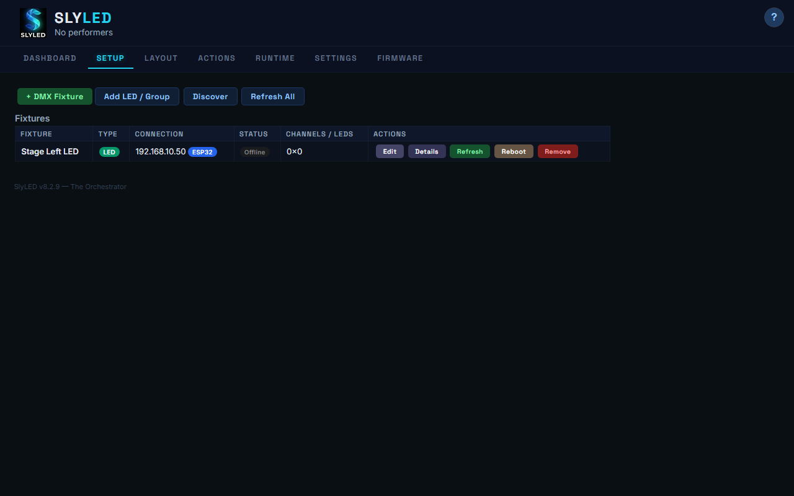
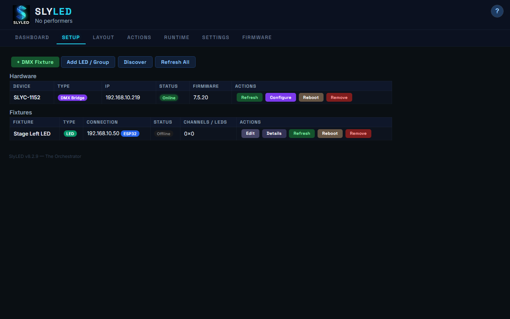
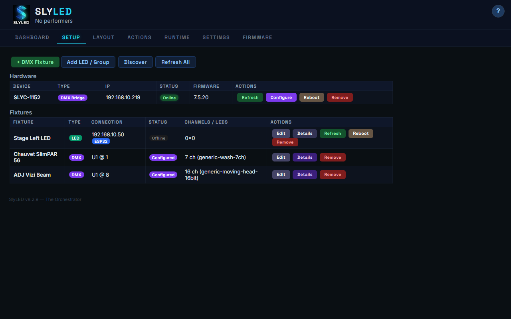
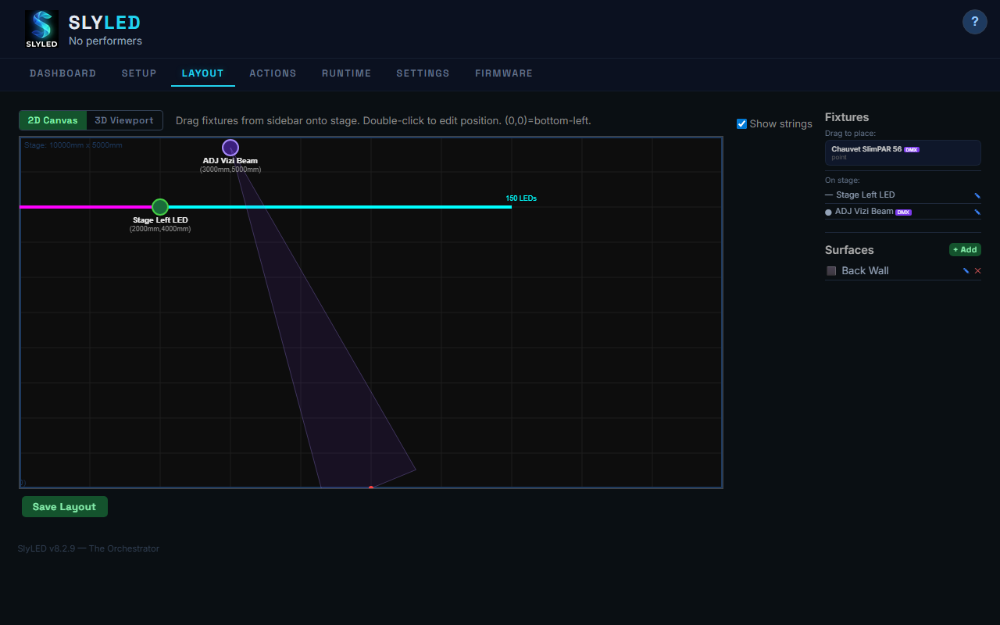
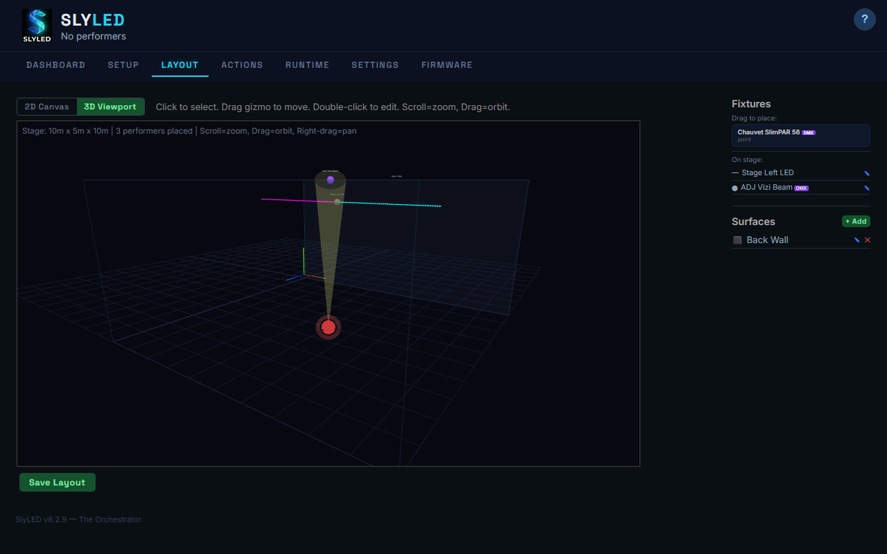
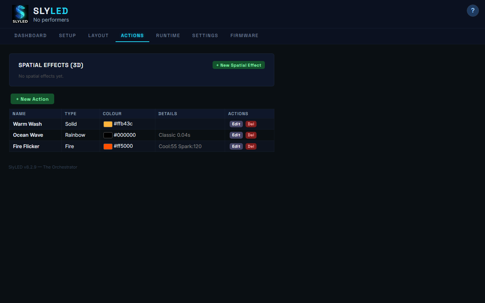
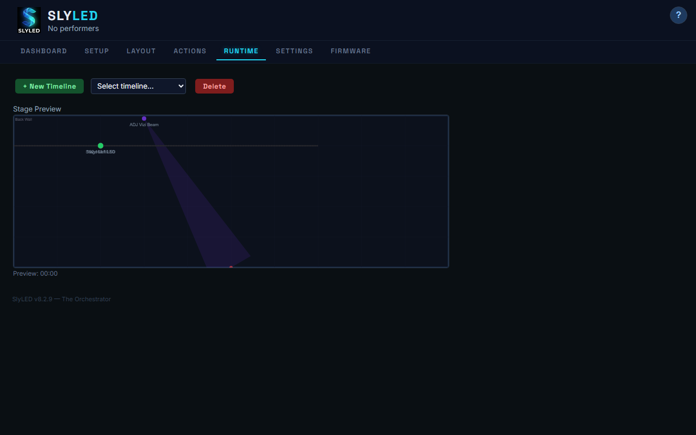
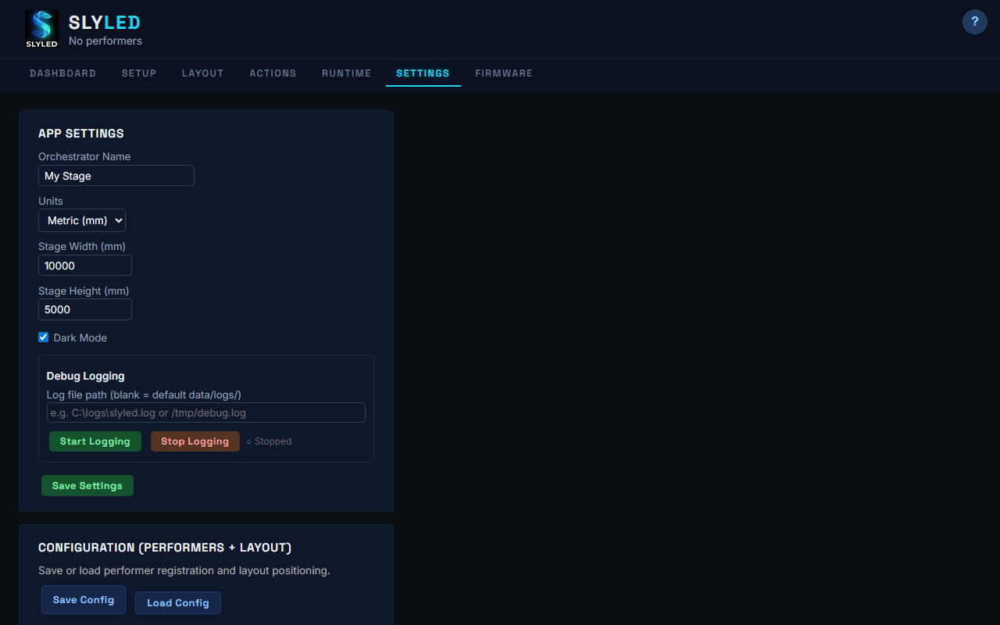

Run SlyLED.exe — the dashboard opens empty, ready for you to add performers and fixtures.

Go to the Firmware tab. Connect your ESP32 via USB, select the COM port, and click Flash. WiFi credentials are pushed automatically.

Go to Setup, click Discover. Your ESP32 appears automatically. Click Add to register it. Configure 2 LED strings with 150 LEDs each.

The Giga DMX Bridge appears in the Hardware section with a purple "DMX Bridge" badge. Click Configure to set universe and address ranges.

Click + DMX Fixture to launch the wizard. Search the Open Fixture Library for your exact model, or use a generic profile. Set universe and address.

Switch to the Layout tab. Drag fixtures onto the stage canvas. LED strings show as colored lines, DMX fixtures show beam cones toward their aim points.

Toggle to 3D for a Three.js viewport. Orbit, zoom, and pan the scene. Drag aim spheres to redirect moving head beams.

Build your effects library — 14 built-in types including Rainbow, Chase, Fire, Comet, and Strobe. Each with customizable speed, color, and direction.

Load a preset show or build a timeline. Click Bake → Sync → Start. The emulator shows real-time fixture states with spatial field visualization.

Configure Art-Net routing, save/load shows, manage WiFi credentials, browse the community fixture library, and control fixture groups.
